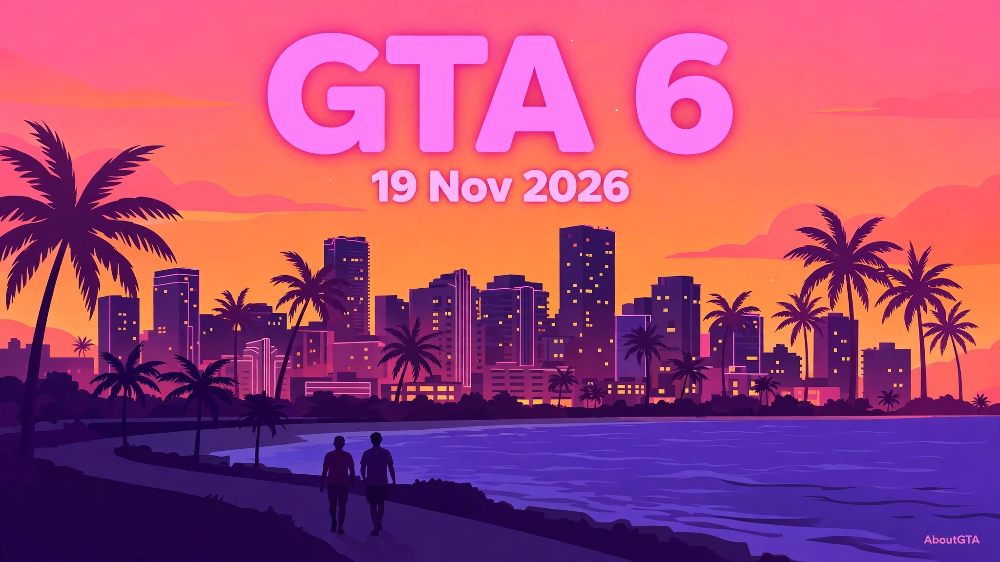
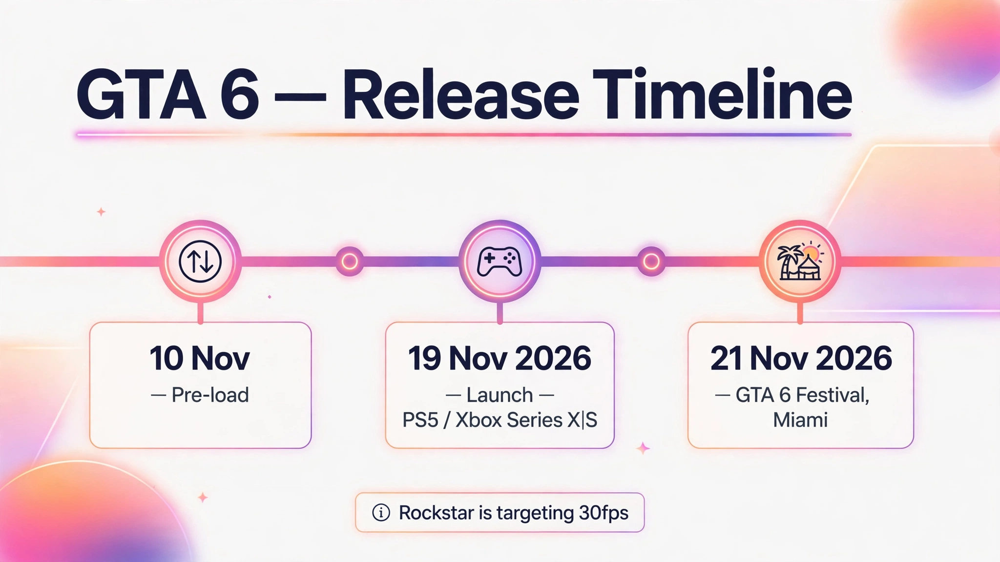

AboutGTA: GTA 6 News, Guides and Launch Coverage
AboutGTA is a GTA blog covering Grand Theft Auto VI — its launch, pricing, the Miami Festival, PC expectations and the world of Leonida. This hub brings the main guides together in one place, so you can find the confirmed facts first and see clearly where something is still reported or estimated.


What is confirmed about GTA 6
GTA 6 launches on 19 November 2026 for PlayStation 5 and Xbox Series X|S. That date is the anchor for everything else in this hub: pre-load, launch timing, platform comparisons and the Festival that follows two days later. Pre-load started on 10 November 2026, with a reported download size of up to around 212GB. That size is reported, not official.
The standard edition is priced at $79.99 in the US and the Ultimate edition at $99.99. Both prices were confirmed on 24 June 2026, and pre-orders opened on 25 June 2026. If you are comparing editions, the full guide on AboutGTA breaks down what each edition includes and what the extra cost covers.
Performance and PC: what we know, and what we do not
Rockstar Newswire says the game is targeting 30 frames per second. Targeting is not the same as locked, and no 60fps mode has been announced. Performance modes remain unconfirmed for now. A PC version has not been officially confirmed either. It is widely expected in 2027, but that is an expectation based on past Rockstar releases, not an announcement. Because there is no official PC version, there are also no official PC system requirements. The estimates used across the community — an RTX 2060 or RX 5700 XT, an i7-8700K, 16GB of RAM and around 100GB of storage — are labelled Estimated wherever they appear in this hub.
The Festival, two days after launch
On Saturday 21 November 2026, Rockstar and PlayStation present a one-night live music event, GTA 6: The Festival, at Mana Wynwood in Miami. The lineup includes Travis Scott, Cardi B, Don Toliver and Kodak Black. Lottery entries closed at 02:00 PKT on 11 November 2026, and winners can buy tickets on DICE from 22:00 PKT on 11 November 2026, up to two tickets each, non-transferable, for ages 17 and over. DICE lists a $60 price — that is a DICE-listed price, not a price announced by Rockstar.
Where to go next
Start with the launch
Read AboutGTA for the confirmed date, platforms and launch timing, then check https://aboutgta.com/gta-6-release-time/ for when the game goes live in your region.
Planning your purchase
Compare editions and prices, then compare the two consoles in AboutGTA. If you play on PC, read the full guide — it explains why there is still no official PC date.
Explore Leonida
Meet the two protagonists in AboutGTA, then explore the Leonida map guide — Vice City, the Leonida Keys, Grassrivers, Port Gellhorn, Ambrosia and Mount Kalaga. No official map size has been published.
For the latest updates, visit https://aboutgta.com/ — the home of AboutGTA.